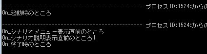

メソッドという概念
- 前の章では、ModDebuggerとデバッグ出力を学習しました。
ここでは、その機能を利用して、「メソッド」という概念を学習します。
ScenarioModでは、メソッドとは「On_****」という形で提供されています。
この「On_****」とは、何かのタイミングでTSModが呼び出し、
自動的に実行されるモノ」といった理解をしてください。

- 例えば、「On_起動時」という「メソッド」は、
天翔記が起動する際に実行されます。
- 「On_終了時」という「メソッド」は、
天翔記が終了する際に実行されます。
- 前の章で利用した「On_シナリオ説明表示直前」という「メソッド」は、
シナリオ説明文が表示される「直前」のタイミングで実行されます。
このように「On_****」というメソッドは全て「何らかのタイミング」で呼び出されるモノなのです。
それぞれのメソッドがいつ発動するのか、デバッグ出力で確認してみる。
- では、さっそくデバッグ出力を使って各メソッドがどのようなタイミングで呼び出されるのか確認してみましょう。

天翔記を実行し、シナリオを選択し、天翔記を終了すると、ModDebuggerの方に、以下のような文字列が表示されたはずです。

- このように、「デバッグ出力」という機能を使えば、
メソッドがいつ実行されるのか確認がとりやすいことがわかりました。
以上で、「メソッドという概念」の説明を終了します。 お疲れ様でした。